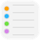
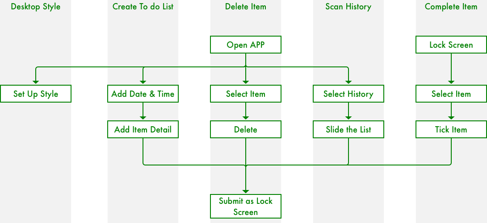
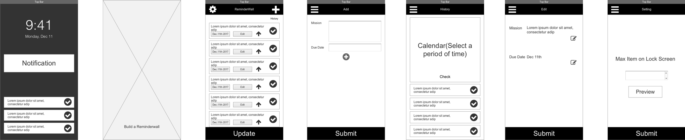
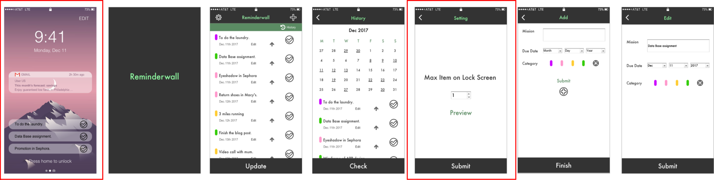
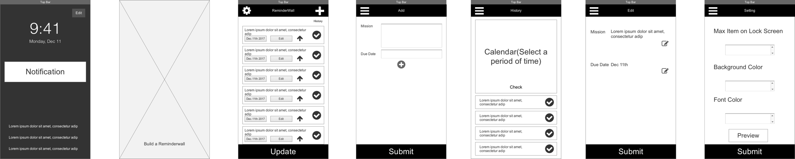
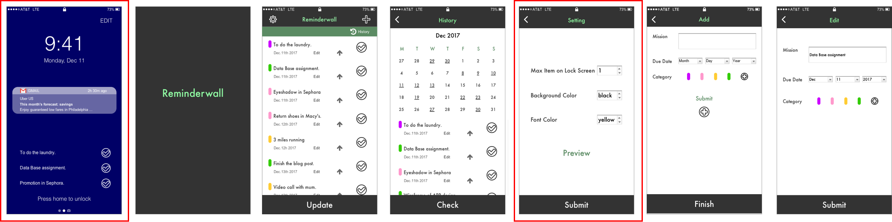

Unbundling APP Design
Personal Project
Orignal APP
Reminder
IDEA
This is the screenshot of my laptop right now. I use sketch to do this image. I add all my assignment at the beginning of each week, and add an star on the end if I finsh this task. I change the background once a week.
Unbundled Function
Add things to do in APP and create a background wall paper to remind people.
The reminder apps are too complicated to use. Users need to open the APP first and than see the schedule, but what if they don’t open that APP at that day?
Create schedule list as a background, in mobile phone or computer, each time users unlock the phone or use the computer they can notice the list.
But not all people use laptop every day, but we need to use our mobile phone almost each day, so I decided to design an mobile APP.
DRAFT USERFLOW
The draft userflow has been devided by four phases.
Desktop Style — To set up the style of lock screen.
Create To Do List — Add tasks to create a list.
Complete Item — Finish a task.
Delete Item — If user feel this task is not useful anymore.
AFFINITY DIAGRAM

1. The pattern of background is not so important. Keep it concise.
2. The order of the to do list should be well designed. The most emergency mission on the top of list. Use color to emphasize.
3. If there is a notification, think about the layout to show the list and the notification at the same time.
4. Display a longer list of all items, and keep all history missions can be scanned.
5. Users want to click complete on the lock screen, and data auto updated on the APP.
IMPROVED USERFLOW
1. Users can tick to complete item on lock screen.
2. All the tasks has been well reserved as history.
3. The lock screen style can be changed by users.
ALL CONTENT
So these are the main content or pages this application needs to have.
FEATURE MAP
I’ve made five draft feature maps.
DRAFT
Based on the feature map, I made two wireframes and two different style visual designs
The style is like the sticky notes. I used different color to categorize different tasks. Each task includes the information of due date, due time and remain time, and all tasks are ordered by the emergency precedure.
In this design I want to keep all the things concise, so each task just have one sentence description.
In class critique, I got these advice.
1. The sequence of all tasks is very important.
2. Just use simple sentence to describe a task is enough.
3. The pattern of the background decrease the readable.
4. “Add” is an important fuction.
5. Use different color to categorize task is nice, but the it is a litlle bit color overwhelm, try to use dot instead of rectangle.
VALIDATION RESEARCH
I used Axure to make two demos to do the validation research.Link：https://izgy37.axshare.com/
Style-1: Keep the original background,and can set the item amount on lock screen.
 Style-2: Use a color as the background, users can customize the font color and background color.
 1. Keep the original pattern as the background of lock screen .
2. Use some icon to classify all the tasks, it is hard to remember the means of the color.
3. The “edit” is too small to click.
4. Add a category of “others”.
5. Introduce how to use it in onboarding pages.
6. It is better to have an alarm to remind user if time is coming up.
7. The sequence of history list should by the time.
8. The completed items should disappear.
9. To have a better way to keep an item on the top of list.
10. Clean all past items in a period.